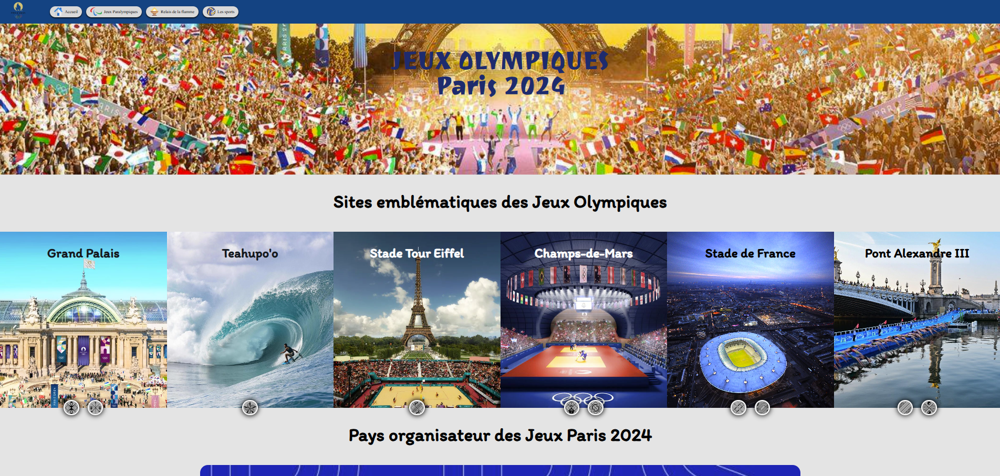

Site Web des JO
Nous avons réalisé en équipe, un site sur le thème des JO de Paris. Nous avons étudié le besoin client, avons réalisé le maquettage du site, puis son développement. Le site présente la page d'accueil, la natation, et la discipline du 400m.
Technologies : HTML5, CSS3, Javascript
Compétences : Développement web, travail d'équipe

Ce portfolio
Ce portefolio en lui-même est aussi un projet que j'ai réalisé. je l'ai développé en prenant en compte la charte graphique de mon CV, pour garder une continuité dans les différents support où vous pourrez me trouver
Technologies : HTML5, CSS3, Javascript
Compétences : Développement web